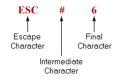
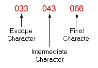
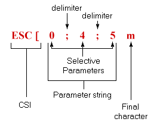
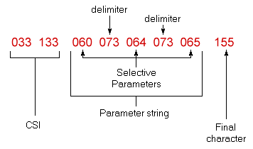

The VT100 terminal normally performs a two-part function. It is an input device to a computer – information entered through the keyboard is sent to the computer. It is simultaneously an output device for the computer – that is, data coming in from the computer is displayed on the video screen. Figure 3-1 shows the data flow.
This section of the user’s manual discusses data flow between the VT100 and the host. Included are codes generated by the keyboard; the transmission protocol followed by the terminal; and the actions and reactions of the terminal to control functions in both ANSI and VT52 modes of operation.
The VT100 uses a keyboard with a key arrangement similar to an ordinary office typewriter, as shown in Figure 3-2. In addition to the standard typewriter keys the VT100 keyboard has additional keys and indicators used to generate control sequences, cursor control commands, and to show the current terminal status.
LED Indicators
The keyboard has seven light emitting diodes (LEDs) of which two are committed
to the complementary ON-LINE/LOCAL function. The power on condition is implicitly
shown by one of the two LEDs being on; that is, if the keyboard is connected
and power is on, one of these LEDs will be on.
A third LED indicates a “keyboard locked” condition. In this condition the keyboard has been “turned off” automatically by the terminal due to a full buffer or by the host through the transmission of an XOFF to the terminal.
The four remaining LEDs are programmable and can be assigned any meaning for specific applications. The code sequences to turn these LEDs on or off are discussed later in this chapter.
SET-UP
The SET-UP key is at the upper-left corner of the main key array. Operations
performed in SET-UP mode can be stored in nonvolatile memory (NVR) so that
turning the terminal power off does not, by itself, alter the terminal configuration.
The procedures to change the SET-UP features are provided in the operator’s information section of this manual. Those SET-UP features which may be modified by the host are listed in Table 3-1 and described in detail under the escape sequences.
| SET-UP Feature or Machine State | Changeable from Host Computer* | Saved in NVR and Changeable in SET-UP |
|---|---|---|
| Alternate keypad mode | Yes (DECKPAM/DECKPNM) | No |
| ANSI/VT52 | Yes (DECANM) | Yes |
| Auto Repeat | Yes (DECARM) | Yes |
| AUTO XON XOFF | No | Yes |
| Bits per character | No | Yes |
| Characters per line | Yes (DECCOLM) | Yes |
| Cursor | No | Yes |
| Cursor key modes | Yes (DECCKM) | No |
| Interlace | Yes (DECINLM) | Yes |
| New Line | Yes (LNM) | Yes |
| Keyclick | No | Yes |
| Margin bell | No | Yes |
| Origin mode | Yes (DECOM) | No |
| Parity | No | Yes |
| Parity sense | No | Yes |
| Power | No | Yes |
| Receive speed | No | Yes |
| Screen | Yes (DECSCNM) | Yes |
| Scroll | Yes (DECSCLM) | Yes |
| Tabs | Yes (HTS/TBC) | Yes |
| Transmit speed | No | Yes |
| Wraparound | Yes (DECAWM) | Yes |
| (shifted) | Yes (SCS) | Yes |
| * The appropriate control or escape sequence mnemonic is indicated in parentheses. | ||
Keyboard Operation
The operator uses the keyboard to transmit codes to the host. Some keys transmit
one or more codes to the host immediately when typed. Other keys such as CTRL
and SHIFT do not transmit codes when typed, but modify the codes transmitted
by other keys. The code-transmitting keys cause the terminal to make a clicking
sound to verify to the operator that the keystroke has been processed by the
terminal. If two code-transmitting keys are pressed together, two codes will be
transmitted according to the order in which the keys were typed. The terminal will
not wait for the keys to be lifted, but will transmit both codes as soon as possible
after the keys are first typed. If three such keys are pressed simultaneously, the
codes for the first two keys are transmitted immediately; the code for the third will
be transmitted when one of the first two keys is lifted.
Alphabetic Keys – The VT100 will transmit the lowercase code unless either or both of the SHIFT keys are down, or unless the CAPS LOCK key is down. Pressing the CAPS LOCK key will lock only the 26 alphabetic keys in the shifted (uppercase) mode. Table 3-2 shows the codes generated by the alphabetic keys.
| Key | Uppercase Code (octal) | Lowercase Code (octal) |
|---|---|---|
| A | 101 | 141 |
| B | 102 | 142 |
| C | 103 | 143 |
| D | 104 | 144 |
| E | 105 | 145 |
| F | 106 | 146 |
| G | 107 | 147 |
| H | 110 | 150 |
| I | 111 | 151 |
| J | 112 | 152 |
| K | 113 | 153 |
| L | 114 | 154 |
| M | 115 | 155 |
| N | 116 | 156 |
| O | 117 | 157 |
| P | 120 | 160 |
| Q | 121 | 161 |
| R | 122 | 162 |
| S | 123 | 163 |
| T | 124 | 164 |
| U | 125 | 165 |
| V | 126 | 166 |
| W | 127 | 167 |
| X | 130 | 170 |
| Y | 131 | 171 |
| Z | 132 | 172 |
Nonalphabetic Keys – Each of the nonalphabetic keys can be used to generate two different codes. One code will be generated if neither SHIFT key is pressed. The other code will be generated if either or both of the SHIFT keys are down. Unlike the SHIFT LOCK key of a typewriter, the CAPS LOCK key does not affect these keys; it affects only the alphabetic keys. Table 3-3 shows the nonalphabetic keys and the codes they generate.
| Lowercase Character | Neither SHIFT Key Down (Octal) | Uppercase Character | Either or Both SHIFT Keys Down (Octal) |
|---|---|---|---|
| 1 | 061 | ! | 041 |
| 2 | 062 | @ | 100 |
| 3 | 063 | # or £ | 043 |
| 4 | 064 | $ | 044 |
| 5 | 065 | % | 045 |
| 6 | 066 | ^ | 136 |
| 7 | 067 | & | 046 |
| 8 | 070 | * | 052 |
| 9 | 071 | ( | 050 |
| 0 | 060 | ) | 051 |
| - | 055 | _ | 137 |
| = | 075 | + | 053 |
| [ | 133 | { | 173 |
| ; | 073 | : | 072 |
| ' (apostrophe) | 047 | " | 042 |
| , (comma) | 054 | < | 074 |
| . (period) | 056 | > | 076 |
| / | 057 | ? | 077 |
| \ | 134 | | | 174 |
| ` | 140 | ~ | 176 |
| ] | 135 | } | 175 |
Function Keys – There are several keys on the keyboard which transmit control codes. Control codes do not produce displayable characters but are codes for functions. If these codes are received by the terminal, the VT100 will perform the associated function as shown in Table 3-4.
| Key | Octal Value of Code Sent or Received by VT100 | Action The Terminal Would Take If Host Sent That Code |
|---|---|---|
| RETURN* | 015 | Carriage return function |
| LINEFEED | 012 | Line Feed |
| BACKSPACE | 010 | Backspace function |
| TAB | 011 | Tab function |
| SPACE BAR | 040 | Deposit a space on the screen erasing what was there before. |
| ESC | 033 | The initial delimiter of an escape sequence – interpret the following character string from the host as a command, rather than displaying it. |
| DELETE | 177 | Ignored by the VT100 |
| * The RETURN key can be redefined so that it issues 0158, 0128, (carriage return – line feed). The New Line feature in SET-UP mode provides this capability. | ||
NO SCROLL – When the NO SCROLL key is pressed it generates a single XOFF code, inhibits further scrolling and freezes the screen. When pressed again the same key generates XON. In practice, if the software recognizes XOFF, the host will stop transmitting until the NO SCROLL key is pressed again to allow scrolling. If the XOFF/XON feature is disabled (SET-UP function) the NO SCROLL key causes no action.
BREAK – Typing the BREAK key causes the transmission line to be forced to its zero state for 0.2333 seconds ± 10 percent. If either SHIFT key is down, the time is increased to 3.5 seconds ± 10 percent. Data Terminal Ready is also deasserted during this interval. At the conclusion of the 3.5 second interval Data Terminal Ready will again be asserted.
The SHIFT and BREAK keys typed together provide the long-break-disconnect function. Used with properly configured modems with RS-232-C levels, it will cause both the local and remote data sets to disconnect. For modems that are connected via the 20 mA current loop, issuing the long space may disconnect the remote data set only.
The CTRL and BREAK keys typed together cause the transmission of the answerback message.
The BREAK key does not function when the VT100 is in LOCAL mode.
Auto Repeating – All keys will auto repeat except: SET-UP, ESC, NO SCROLL, TAB, RETURN, and any key pressed with CTRL. Auto repeating works as follows: when a key is typed, its code(s) is sent once, immediately. If the key is held down for more than ½ second, the code(s) will be sent repeatedly at a rate of approximately 30 Hz (less if low transmit baud rates are used) until the key is released.
CTRL (Control) – The CTRL key is used in conjunction with other keys on the keyboard to generate control codes. If the CTRL key is held down when any of the keys in Table 3-5 are typed, the code actually transmitted is in the range 0008-0378.
| Key Pressed with CTRL key down (shifted or unshifted) | Octal Code Transmitted | Function Mnemonic |
|---|---|---|
| Space Bar | 000 | NUL |
| A | 001 | SOH |
| B | 002 | STX |
| C | 003 | ETX |
| D | 004 | EOT |
| E | 005 | ENQ |
| F | 006 | ACK |
| G | 007 | BELL |
| H | 010 | BS |
| I | 011 | HT |
| J | 012 | LF |
| K | 013 | VT |
| L | 014 | FF |
| M | 015 | CR |
| N | 016 | SO |
| O | 017 | SI |
| P | 020 | DLE |
| Q | 021 | DC1 or XON |
| R | 022 | DC2 |
| S | 023 | DC3 or XOFF |
| T | 024 | DC4 |
| U | 025 | NAK |
| V | 026 | SYN |
| W | 027 | ETB |
| X | 030 | CAN |
| Y | 031 | EM |
| Z | 032 | SUB |
| [ | 033 | ESC |
| \ | 034 | FS |
| ] | 035 | GS |
| ~ | 036 | RS |
| ? | 037 | US |
Cursor Control – The keyboard also contains four keys labeled with arrows in each of four directions. These keys transmit control sequences. If the host echoes these control sequences back to the terminal, the cursor will move one character up, down, right, or left. Table 3-6 shows the control sequences generated by each key.
| Cursor Key (Arrow) | VT52 Mode* | ANSI Mode and Cursor Key Mode Reset* | ANSI Mode and Cursor Key Mode Set |
|---|---|---|---|
| Up | ESC A | ESC [ A | ESC O A |
| Down | ESC B | ESC [ B | ESC O B |
| Right | ESC C | ESC [ C | ESC O C |
| Left | ESC D | ESC [ D | ESC O D |
| * See the control sequences section of this chapter for a complete discussion of these modes. | |||
Auxiliary Keypad – The keys on the auxiliary keypad normally transmit the codes for the numerals, decimal point, minus sign, and comma. In addition, the key labeled ENTER transmits the same code as the RETURN key. The host cannot tell if these keys were typed on the auxiliary keypad as opposed to the corresponding keys on the main keyboard. Therefore, software which requires considerable numeric data entry need not be rewritten to use the keypad.
However, if software must be able to distinguish between pressing a key on the auxiliary keypad and pressing the corresponding key on the main keyboard, the host can give the terminal a command to place it in keypad application mode. In keypad application mode all keys on the auxiliary keypad are defined to give control sequences which may be used by the host as user-defined functions.
The codes sent by the auxiliary keypad for the four combinations of the VT52/ANSI mode and keypad numeric/application mode are shown in Tables 3-7 and 3-8. None of the keys are affected by pressing the SHIFT, CAPS LOCK, or CTRL keys.
| Key | Keypad Numeric Mode | Keypad Application Mode |
|---|---|---|
| 0 | 0 | ESC ? p |
| 1 | 1 | ESC ? q |
| 2 | 2 | ESC ? r |
| 3 | 3 | ESC ? s |
| 4 | 4 | ESC ? t |
| 5 | 5 | ESC ? u |
| 6 | 6 | ESC ? v |
| 7 | 7 | ESC ? w |
| 8 | 8 | ESC ? x |
| 9 | 9 | ESC ? y |
| - (dash) | - (dash) | ESC ? m |
| , (comma) | , (comma) | ESC ? l* |
| . (period) | . (period) | ESC ? n |
| ENTER | Same as RETURN key | ESC ? M |
| PF1 | ESC P | ESC P |
| PF2 | ESC Q | ESC Q |
| PF3 | ESC R | ESC R |
| PF4 | ESC S | ESC S |
| * The last character of this escape sequence is a lowercase L (1548). | ||
| Key | Keypad Numeric Mode | Keypad Application Mode |
|---|---|---|
| 0 | 0 | ESC O p |
| 1 | 1 | ESC O q |
| 2 | 2 | ESC O r |
| 3 | 3 | ESC O s |
| 4 | 4 | ESC O t |
| 5 | 5 | ESC O u |
| 6 | 6 | ESC O v |
| 7 | 7 | ESC O w |
| 8 | 8 | ESC O x |
| 9 | 9 | ESC O y |
| - (dash) | - (dash) | ESC O m |
| , (comma) | , (comma) | ESC O l* |
| . (period) | . (period) | ESC O n |
| ENTER | Same as RETURN key | ESC O M |
| PF1 | ESC O P | ESC O P |
| PF2 | ESC O Q | ESC O Q |
| PF3 | ESC O R | ESC O R |
| PF4 | ESC O S | ESC O S |
| * The last character of the escape sequence is a lowercase L (1548). | ||
NOTE: In ANSI mode, if the codes are echoed back to the VT100, or if the terminal is in local mode, the last character of the sequence will be displayed on the screen; e.g., PF1 will display a “P”.
Special Graphics Characters
If the Special Graphics set is selected, the graphics for ASCII codes 1378 through
1768 will be replaced according to Table 3-9. (See the SCS control sequence).
| Octal Code | Graphic with US or UK Set |
Graphic with “Special Graphics” Set |
|
|---|---|---|---|
| 137 | _ | Blank | |
| 140 | ` | Diamond | |
| 141 | a | Checkerboard (error indicator) |
|
| 142 | b | Horizontal tab | |
| 143 | c | Form Feed | |
| 144 | d | Carriage return | |
| 145 | e | Line feed | |
| 146 | f | Degree symbol | |
| 147 | g | Plus/minus | |
| 150 | h | New line | |
| 151 | i | Vertical tab | |
| 152 | j | Lower-right corner | |
| 153 | k | Upper-right corner | |
| 154 | l | Upper-left corner | |
| 155 | m | Lower-left corner | |
| 156 | n | Crossing lines | |
| 157 | o | Horizontal line - Scan 1 | |
| 160 | p | Horizontal line - Scan 3 | |
| 161 | q | Horizontal line - Scan 5 | |
| 162 | r | Horizontal line - Scan 7 | |
| 163 | s | Horizontal line - Scan 9 | |
| 164 | t | Left “T” | |
| 165 | u | Right “T” | |
| 166 | v | Bottom “T” | |
| 167 | w | Top “T” | |
| 170 | x | | Vertical bar | |
| 171 | y | Less than or equal to | |
| 172 | z | Greater than or equal to | |
| 173 | { | Pi | |
| 174 | | | Not equal to | |
| 175 | } | UK pound sign | |
| 176 | ~ | Centered dot | |
| Note 1: | Codes 1528-1568, 1618, and 1648-1708 are used to draw rectangular grids; each piece of this line drawing set is contiguous with others so that the lines formed are unbroken. | ||
| Note 2: | Codes 1578-1638 give better vertical resolution than dashes and underlines when drawing graphs; using these segments 120 × 132 resolution may be obtained in 132 column mode with the Advanced Video Option installed. | ||
Full Duplex
The terminal can operate at transmission speeds up to 19,200 baud. However, the
terminal may not be able to keep up with incoming data. The terminal stores
incoming characters in a 64-character buffer and processes them on a first-in/first-out
basis. When the content of the buffer reaches 32 characters, the terminal will
transmit 0238 (XOFF or DC3). On this signal the host should suspend its transmission
to the terminal. Eventually, if the host stops transmitting, the terminal will
deplete the buffer. When 16 characters remain in the buffer the terminal will
transmit 0218 (XON or DC1) to signal the host that it may resume transmission.
If the host fails to respond to an XOFF from the terminal in a timely manner, the buffer will continue to fill. When the 64-character capacity of the buffer is exceeded, a condition occurs called “buffer overflow.” To determine if the buffer will overflow use the following formulas:
| No. of characters to overflow | = | 32 - [3 × (receiver speed / transmit speed) ] |
| Time to respond to XOFF | = | No. of characters to overflow × (bits per character + parity bit + 2) / receiver speed |
Example 1:
The VT100 is transmitting 8-bit characters with no parity at 1200 baud and receiving
at 1200 baud. The terminal has just sent an XOFF which the host must
respond to within 0.2416 second to avoid a buffer overflow.
| No. of characters to overflow | = | 32 - [3 × (1200 / 1200) ] = 29 characters |
| Time to respond to XOFF | = | 29 × (8 + 0 + 2) / 1200 = 0.2416 second |
Example 2:
The VT100 is transmitting 7-bit characters with parity at 300 baud and receiving
at 1200 baud. The terminal has just sent an XOFF which the host must respond to
within 0.1666 second to avoid a buffer overflow.
| No. of characters to overflow | = | 32 - [3 × (1200 / 300) ] = 20 characters |
| Time to respond to XOFF | = | 20 × (7 + 1 + 2) / 1200 = 0.1666 second |
If the buffer overflows, the VT100 will begin to discard incoming characters and the error character will be displayed.
Software which does not support receipt of the XOFF/XON signals from the terminal
can still use the VT100 provided the software never sends the ESC code to the
terminal, the baud rate is limited to 4800 or less, and the software does not use
smooth scrolling or split screen features.
Alternatively, if XOFF/XON cannot be used, fill characters may be used after characters or character strings are sent to the VT100. A reference chart of fill characters required for these functions is included in Appendix C.
Two of the terminal functions, Reset and Self-Test, reinitialize the terminal and erase the buffer. This means that if characters are received subsequent to the commands to perform these two functions and the characters are placed in the buffer, the character would be destroyed without being processed.
To compensate for this, the host may act in one of two ways:
The XOFF/XON synchronization scheme has an advantage over requiring the host to insert delays or filler characters in its data stream. Requiring a minimum of software support, XON/XOFF ensures that every character or command sent to the VT100 will be processed in correct order. It frees interface programs from all timing considerations and results in more reliable operation.
In addition to the buffer-filling condition, there are two other means of transmitting XOFF and XON; the NO SCROLL key, and Control S/Control Q. If the XON/XOFF feature is enabled, the VT100 will coordinate these three sources of XOFF and XON so that the desired effect occurs. For example, if the buffer-filling condition has caused an XOFF to be sent, and then the operator types the NO SCROLL key, a second XOFF is not sent. Instead of sending an XON when the buffer empties, the VT100 waits until the operator types the NO SCROLL key again before sending XON.
Also, entering SET-UP mode causes the VT100 to temporarily stop taking characters from the buffer. An XOFF will be sent if the buffer becomes nearly full.
Use of Control S and Control Q will also be synchronized with the NO SCROLL key.
If the XON/XOFF feature is disabled, the buffer-filling condition will not send an XOFF, the NO SCROLL key is disabled, and Control S and Control Q will be transmitted as typed.
The VT100 also recognizes received XOFF and XON. Receipt of XOFF will inhibit the VT100 from transmitting any codes except XOFF and XON. From three to seven keystrokes on the keyboard will be stored in a keyboard buffer (some keys transmit two or three codes, e.g., cursor controls). If the keyboard buffer overflows, keyclicks will stop and the KBD LOCKED LED will come on. Transmission resumes upon receipt of XON.
If the user transmits an XOFF to the host (by Control S or NO SCROLL), the host should not echo any further type-in until the user types XON. This places the burden of not overloading the host’s output buffer on the user.
Entering and exiting SET-UP clears the keyboard locked condition.
The VT100 has many control commands which cause it to take action other than displaying a character on the screen. In this way, the host can command the terminal to move the cursor, change modes, ring the bell, etc. The following paragraphs discuss the terminal control commands.
Control characters have values of 0008 - 0378, and 1778. The control characters recognized by the VT100 are shown in Table 3-10. All other control codes cause no action to be taken.
Control characters (codes 08 to 378 inclusive) are specifically excluded from the control sequence syntax, but may be embedded within a control sequence. Embedded control characters are executed as soon as they are encountered by the VT100. The processing of the control sequence then continues with the next character received. The exceptions are: if the character ESC occurs, the current control sequence is aborted, and a new one commences beginning with the ESC just received. If the character CAN (308) or the character SUB (328) occurs, the current control sequence is aborted. The ability to embed control characters allows the synchronization characters XON and XOFF to be interpreted properly without affecting the control sequence.
| Control Character | Octal Code | Action Taken |
|---|---|---|
| NUL | 000 | Ignored on input (not stored in input buffer; see full duplex protocol). |
| ENQ | 005 | Transmit answerback message. |
| BEL | 007 | Sound bell tone from keyboard. |
| BS | 010 | Move the cursor to the left one character position, unless it is at the left margin, in which case no action occurs. |
| HT | 011 | Move the cursor to the next tab stop, or to the right margin if no further tab stops are present on the line. |
| LF | 012 | This code causes a line feed or a new line operation. (See new line mode). |
| VT | 013 | Interpreted as LF. |
| FF | 014 | Interpreted as LF. |
| CR | 015 | Move cursor to the left margin on the current line. |
| SO | 016 | Invoke G1 character set, as designated by SCS control sequence. |
| SI | 017 | Select G0 character set, as selected by ESC ( sequence. |
| XON | 021 | Causes terminal to resume transmission. |
| XOFF | 023 | Causes terminal to stop transmitted all codes except XOFF and XON. |
| CAN | 030 | If sent during a control sequence, the sequence is immediately terminated and not executed. It also causes the error character to be displayed. |
| SUB | 032 | Interpreted as CAN. |
| ESC | 033 | Invokes a control sequence. |
| DEL | 177 | Ignored on input (not stored in input buffer). |
The VT100 is an upward and downward software compatible terminal; that is, previous DIGITAL video terminals have DIGITAL private standards for control sequences. The American National Standards Institute (ANSI) has since standardized escape and control sequences in terminals in documents X3.41-1974 and X3.64-1977.
NOTE: The ANSI standards allow the manufacturer flexibility in implementing each function. This manual describes how the VT100 will respond to the implemented ANSI control function.
The VT100 is compatible with both the previous DIGITAL standard and ANSI standards. Customers may use existing DIGITAL software designed around the VT52 or new VT100 software. The VT100 has a “VT52 compatible” mode in which the VT100 responds to control sequences like a VT52. In this mode, most of the new VT100 features cannot be used.
Throughout this section of the manual, references will be made to “VT52 mode” or “ANSI mode.” These two terms are used to indicate the VT100’s software compatibility. All new software should be designed around the VT100 “ANSI mode.” Future DIGITAL video terminals will not necessarily be committed to VT52 compatibility.
NOTE: ANSI standards may be obtained by writing:
Sales Department
American National Standards Institute
1430 Broadway
New York, New York 10018
The following listing defines the basic elements of the ANSI mode control sequences. A more complete listing appears in Appendix A.
ESC [.Examples:
Control sequence for double-width line (DECDWL) ESC # 6
| Sequence | Octal Representation of Sequence |
|---|---|
 |
 |
Control sequence to turn off all character attributes, and then turn on underscore
and blink attributes (SGR). ESC [ 0 ; 4 ; 5 m
| Sequence | Octal Representation of Sequence |
|---|---|
 |
 |
Alternative sequences which will accomplish the same thing:
| Sequence | Octal Representation of Sequence | |
|---|---|---|
| a. | ESC [ ; 4 ; 5 m |
033 133 073 064 073 065 155 |
| b. | ESC [ m |
033 133 155 |
ESC [ 4 m |
033 133 064 155 |
|
ESC [ 5 m |
033 133 065 155 |
|
| c. | ESC [ 0 ; 04; 005 m |
033 133 060 073 060 064 073 060 060 065 155 |
All of the following escape and control sequences are transmitted from the host computer to the VT100 unless otherwise noted. All of the control sequences are a subset of those specified in ANSI X3.64-1977 and ANSI X3.41-1974.
ESC [ Pn ; Pn R |
default value: 1 |
The CPR sequence reports the active position by means of the parameters. This sequence has two parameter values, the first specifying the line and the second specifying the column. The default condition with no parameters present, or parameters of 0, is equivalent to a cursor at home position.
The numbering of lines depends on the state of the Origin Mode (DECOM).
This control sequence is solicited by a device status report (DSR) sent from the host.
ESC [ Pn D |
default value: 1 |
The CUB sequence moves the active position to the left. The distance moved is determined by the parameter. If the parameter value is zero or one, the active position is moved one position to the left. If the parameter value is n, the active position is moved n positions to the left. If an attempt is made to move the cursor to the left of the left margin, the cursor stops at the left margin. Editor Function
ESC [ Pn B |
default value: 1 |
The CUD sequence moves the active position downward without altering the column position. The number of lines moved is determined by the parameter. If the parameter value is zero or one, the active position is moved one line downward. If the parameter value is n, the active position is moved n lines downward. In an attempt is made to move the cursor below the bottom margin, the cursor stops at the bottom margin. Editor Function
ESC [ Pn C |
default value: 1 |
The CUF sequence moves the active position to the right. The distance moved is determined by the parameter. A parameter value of zero or one moves the active position one position to the right. A parameter value of n moves the active position n positions to the right. If an attempt is made to move the cursor to the right of the right margin, the cursor stops at the right margin. Editor Function
ESC [ Pn ; Pn H |
default value: 1 |
The CUP sequence moves the active position to the position specified by the parameters. This sequence has two parameter values, the first specifying the line position and the second specifying the column position. A parameter value of zero or one for the first or second parameter moves the active position to the first line or column in the display, respectively. The default condition with no parameters present is equivalent to a cursor to home action. In the VT100, this control behaves identically with its format effector counterpart, HVP. Editor Function
The numbering of lines depends on the state of the Origin Mode (DECOM).
ESC [ Pn A |
default value: 1 |
Moves the active position upward without altering the column position. The number of lines moved is determined by the parameter. A parameter value of zero or one moves the active position one line upward. A parameter value of n moves the active position n lines upward. If an attempt is made to move the cursor above the top margin, the cursor stops at the top margin. Editor Function
ESC [ Pn c |
default value: 0 |
| Option Present | Sequence Sent |
|---|---|
| No options | ESC [?1;0c |
| Processor option (STP) | ESC [?1;1c |
| Advanced video option (AVO) | ESC [?1;2c |
| AVO and STP | ESC [?1;3c |
| Graphics option (GPO) | ESC [?1;4c |
| GPO and STP | ESC [?1;5c |
| GPO and AVO | ESC [?1;6c |
| GPO, STP and AVO | ESC [?1;7c |
ESC # 8 |
This command fills the entire screen area with uppercase Es for screen focus and alignment. This command is used by DEC manufacturing and Field Service personnel.
This is a private parameter applicable to set mode (SM) and reset mode (RM) control sequences. The reset state causes only VT52 compatible escape sequences to be interpreted and executed. The set state causes only ANSI "compatible" escape and control sequences to be interpreted and executed.
This is a private parameter applicable to set mode (SM) and reset mode (RM) control sequences. The reset state causes no keyboard keys to auto-repeat. The set state causes certain keyboard keys to auto-repeat.
This is a private parameter applicable to set mode (SM) and reset mode (RM) control sequences. The reset state causes any displayable characters received when the cursor is at the right margin to replace any previous characters there. The set state causes these characters to advance to the start of the next line, doing a scroll up if required and permitted.
This is a private parameter applicable to set mode (SM) and reset mode (RM) control sequences. This mode is only effective when the terminal is in keypad application mode (see DECKPAM) and the ANSI/VT52 mode (DECANM) is set (see DECANM). Under these conditions, if the cursor key mode is reset, the four cursor function keys will send ANSI cursor control commands. If cursor key mode is set, the four cursor function keys will send application functions.
This is a private parameter applicable to set mode (SM) and reset mode (RM) control sequences. The reset state causes a maximum of 80 columns on the screen. The set state causes a maximum of 132 columns on the screen.
Top Half: ESC # 3 |
|
Bottom Half: ESC # 4 |
These sequences cause the line containing the active position to become the top or bottom half of a double-height double-width line. The sequences must be used in pairs on adjacent lines and the same character output must be sent to both lines to form full double-height characters. If the line was single-width single-height, all characters to the right of the center of the screen are lost. The cursor remains over the same character position unless it would be to the right of the right margin, in which case it is moved to the right margin.
NOTE: The use of double-width characters reduces the number of characters per line by half.
ESC # 6 |
This causes the line that contains the active position to become double-width single-height. If the line was single-width single-height, all characters to the right of the screen are lost. The cursor remains over the same character position unless it would be to the right of the right margin, in which case, it is moved to the right margin.
NOTE: The use of double-width characters reduces the number of characters per line by half.
ESC Z |
This sequence causes the same response as the ANSI device attributes (DA). This sequence will not be supported in future DEC terminals, therefore, DA should be used by any new software.
This is a private parameter applicable to set mode (SM) and reset mode (RM) control sequences. The reset state (non-interlace) causes the video processor to display 240 scan lines per frame. The set state (interlace) causes the video processor to display 480 scan lines per frame. There is no increase in character resolution.
ESC = |
The auxiliary keypad keys will transmit control sequences as defined in Tables 3-7 and 3-8.
ESC > |
The auxiliary keypad keys will send ASCII codes corresponding to the characters engraved on the keys.
ESC [ Ps q |
default value: 0 |
Load the four programmable LEDs on the keyboard according to the parameter(s).
| Parameter | Parameter Meaning |
|---|---|
| 0 | Clear LEDs L1 through L4 |
| 1 | Light L1 |
| 2 | Light L2 |
| 3 | Light L3 |
| 4 | Light L4 |
LED numbers are indicated on the keyboard.
This is a private parameter applicable to set mode (SM) and reset mode (RM) control sequences. The reset state causes the origin to be at the upper-left character position on the screen. Line and column numbers are, therefore, independent of current margin settings. The cursor may be positioned outside the margins with a cursor position (CUP) or horizontal and vertical position (HVP) control.
The set state causes the origin to be at the upper-left character position within the margins. Line and column numbers are therefore relative to the current margin settings. The cursor is not allowed to be positioned outside the margins.
The cursor is moved to the new home position when this mode is set or reset.
Lines and columns are numbered consecutively, with the origin being line 1, column 1.
ESC 8 |
This sequence causes the previously saved cursor position, graphic rendition, and character set to be restored.
ESC [ <sol>; <par>; <nbits>; <xspeed>;
<rspeed>; <clkmul>; <flags> x |
These sequence parameters are explained below in the DECREQTPARM sequence.
ESC [ <sol> x |
The sequence DECREPTPARM is sent by the terminal controller to notify the host of the status of selected terminal parameters. The status sequence may be sent when requested by the host or at the terminal’s discretion. DECREPTPARM is sent upon receipt of a DECREQTPARM. On power-up or reset, the VT100 is inhibited from sending unsolicited reports.
The meanings of the sequence parameters are:
| Parameter | Value | Meaning | |||
|---|---|---|---|---|---|
| <sol> | 0 or none | This message is a request (DECREQTPARM) and the terminal will be allowed to send unsolicited reports. (Unsolicited reports are sent when the terminal exits the SET-UP mode). | |||
| 1 | This message is a request; from now on the terminal may only report in response to a request. | ||||
| 2 | This message is a report (DECREPTPARM). | ||||
| 3 | This message is a report and the terminal is only reporting on request. | ||||
| <par> | 1 | No parity set | |||
| 4 | Parity is set and odd | ||||
| 5 | Parity is set and even | ||||
| <nbits> | 1 | 8 bits per character | |||
| 2 | 7 bits per character | ||||
| <xspeed>, <rspeed> | 0 | 50 | Bits per second | ||
| 8 | 75 | ||||
| 16 | 110 | ||||
| 24 | 134.5 | ||||
| 32 | 150 | ||||
| 40 | 200 | ||||
| 48 | 300 | ||||
| 56 | 600 | ||||
| 64 | 1200 | ||||
| 72 | 1800 | ||||
| 80 | 2000 | ||||
| 88 | 2400 | ||||
| 96 | 3600 | ||||
| 104 | 4800 | ||||
| 112 | 9600 | ||||
| 120 | 19200 | ||||
| <clkmul> | 1 | The bit rate multiplier is 16. | |||
| <flags> | 0-15 | This value communicates the four switch values in block 5 of SET UP B, which are only visible to the user when an STP option is installed. These bits may be assigned for an STP device. The four bits are a decimal-encoded binary number. | |||
ESC 7 |
This sequence causes the cursor position, graphic rendition, and character set to be saved. (See DECRC).
This is a private parameter applicable to set mode (SM) and reset mode (RM) control sequences. The reset state causes scrolls to "jump" instantaneously. The set state causes scrolls to be "smooth" at a maximum rate of six lines per second.
This is a private parameter applicable to set mode (SM) and reset mode (RM) control sequences. The reset state causes the screen to be black with white characters. The set state causes the screen to be white with black characters.
ESC [ Pn; Pn r |
default values: see below |
This sequence sets the top and bottom margins to define the scrolling region. The first parameter is the line number of the first line in the scrolling region; the second parameter is the line number of the bottom line in the scrolling region. Default is the entire screen (no margins). The minimum size of the scrolling region allowed is two lines, i.e., the top margin must be less than the bottom margin. The cursor is placed in the home position (see Origin Mode DECOM).
ESC # 5 |
This causes the line which contains the active position to become single-width single-height. The cursor remains on the same character position. This is the default condition for all new lines on the screen.
ESC [ 2 ; Ps y |
Ps is the parameter indicating the test to be done. Ps is computed by taking the weight indicated for each desired test and adding them together. If Ps is 0, no test is performed but the VT100 is reset.
| Test | Weight |
|---|---|
| Power up self-test (ROM check sum, RAM, NVR keyboard and AVO if installed) | 1 |
| Data Loop Back | 2 (loop back connector required) |
| EIA modem control test | 4 (loop back connector required) |
| Repeat Selected Test(s) indefinitely (until failure or power off) |
8 |
ESC [ Ps n |
default value: 0 |
Requests and reports the general status of the VT100 according to the following parameter(s).
| Parameter | Parameter Meaning |
|---|---|
| 0 | Response from VT100 – Ready, No malfunctions detected (default) |
| 3 | Response from VT100 – Malfunction – retry |
| 5 | Command from host – Please report status (using a DSR control sequence) |
| 6 | Command from host – Please report active position (using a CPR control sequence) |
DSR with a parameter value of 0 or 3 is always sent as a response to a requesting DSR with a parameter value of 5.
ESC [ Ps J |
default value: 0 |
This sequence erases some or all of the characters in the display according to the parameter. Any complete line erased by this sequence will return that line to single width mode. Editor Function
| Parameter | Parameter Meaning |
|---|---|
| 0 | Erase from the active position to the end of the screen, inclusive (default) |
| 1 | Erase from start of the screen to the active position, inclusive |
| 2 | Erase all of the display – all lines are erased, changed to single-width, and the cursor does not move. |
ESC [ Ps K |
default value: 0 |
Erases some or all characters in the active line according to the parameter. Editor Function
| Parameter | Parameter Meaning |
|---|---|
| 0 | Erase from the active position to the end of the line, inclusive (default) |
| 1 | Erase from the start of the screen to the active position, inclusive |
| 2 | Erase all of the line, inclusive |
ESC H |
Set one horizontal stop at the active position. Format Effector
ESC [ Pn ; Pn f |
default value: 1 |
Moves the active position to the position specified by the parameters. This sequence has two parameter values, the first specifying the line position and the second specifying the column. A parameter value of either zero or one causes the active position to move to the first line or column in the display, respectively. The default condition with no parameters present moves the active position to the home position. In the VT100, this control behaves identically with its editor function counterpart, CUP. The numbering of lines and columns depends on the reset or set state of the origin mode (DECOM). Format Effector
ESC D |
This sequence causes the active position to move downward one line without changing the column position. If the active position is at the bottom margin, a scroll up is performed. Format Effector
This is a parameter applicable to set mode (SM) and reset mode (RM) control sequences. The reset state causes the interpretation of the line feed (LF), defined in ANSI Standard X3.4-1977, to imply only vertical movement of the active position and causes the RETURN key (CR) to send the single code CR. The set state causes the LF to imply movement to the first position of the following line and causes the RETURN key to send the two codes (CR, LF). This is the New Line (NL) option.
This mode does not affect the index (IND), or next line (NEL) format effectors.
ESC E |
This sequence causes the active position to move to the first position on the next line downward. If the active position is at the bottom margin, a scroll up is performed. Format Effector
ESC M |
Move the active position to the same horizontal position on the preceding line. If the active position is at the top margin, a scroll down is performed. Format Effector
ESC c |
Reset the VT100 to its initial state, i.e., the state it has after it is powered on. This also causes the execution of the power-up self-test and signal INIT H to be asserted briefly.
ESC [ Ps ; Ps ; . . . ; Ps l |
default value: none |
Resets one or more VT100 modes as specified by each selective parameter in the parameter string. Each mode to be reset is specified by a separate parameter. [See Set Mode (SM) control sequence]. (See Modes following this section).
The appropriate G0 and G1 character sets are designated from one of the five possible character sets. The G0 and G1 sets are invoked by the codes SI and SO (shift in and shift out) respectively.
| G0 Sets Sequence | G1 Sets Sequence | Meaning |
|---|---|---|
ESC ( A |
ESC ) A |
United Kingdom Set |
ESC ( B |
ESC ) B |
ASCII Set |
ESC ( 0 |
ESC ) 0 |
Special Graphics |
ESC ( 1 |
ESC ) 1 |
Alternate Character ROM Standard Character Set |
ESC ( 2 |
ESC ) 2 |
Alternate Character ROM Special Graphics |
The United Kingdom and ASCII sets conform to the "ISO international register of character sets to be used with escape sequences". The other sets are private character sets. Special graphics means that the graphic characters for the codes 1378 to 1768 are replaced with other characters. The specified character set will be used until another SCS is received.
NOTE: Additional information concerning the SCS escape sequence may be obtained in ANSI standard X3.41-1974.
ESC [ Ps ; . . . ; Ps m |
default value: 0 |
Invoke the graphic rendition specified by the parameter(s). All following characters transmitted to the VT100 are rendered according to the parameter(s) until the next occurrence of SGR. Format Effector
| Parameter | Parameter Meaning |
|---|---|
| 0 | Attributes off |
| 1 | Bold or increased intensity |
| 4 | Underscore |
| 5 | Blink |
| 7 | Negative (reverse) image |
All other parameter values are ignored.
With the Advanced Video Option, only one type of character attribute is possible as determined by the cursor selection; in that case specifying either the underscore or the reverse attribute will activate the currently selected attribute. (See cursor selection in Chapter 1).
ESC [ Ps ; . . . ; Ps h |
default value: none |
Causes one or more modes to be set within the VT100 as specified by each selective parameter in the parameter string. Each mode to be set is specified by a separate parameter. A mode is considered set until it is reset by a reset mode (RM) control sequence.
ESC [ Ps g |
default value: 0 |
| Parameter | Parameter Meaning |
|---|---|
| 0 | Clear the horizontal tab stop at the active position (the default case). |
| 3 | Clear all horizontal tab stops. |
Any other parameter values are ignored. Format Effector
The following is a list of VT100 modes which may be changed with set mode (SM) and reset mode (RM) controls.
| Parameter | Mode Mnemonic | Mode Function |
|---|---|---|
| 0 | Error (ignored) | |
| 20 | LNM | Line feed new line mode |
If the first character in the parameter string is ? (778), the parameters are interpreted as DEC private parameters according to the following:
| Parameter | Mode Mnemonic | Mode Function |
|---|---|---|
| 0 | Error (ignored) | |
| 1 | DECCKM | Cursor key |
| 2 | DECANM | ANSI/VT52 |
| 3 | DECCOLM | Column |
| 4 | DECSCLM | Scrolling |
| 5 | DECSCNM | Screen |
| 6 | DECOM | Origin |
| 7 | DECAWM | Auto wrap |
| 8 | DECARM | Auto repeating |
| 9 | DECINLM | Interlace |
Any other parameter values are ignored.
The following modes, which are specified in the ANSI X3.64-1977 standard, may be considered to be permanently set, permanently reset, or not applicable, as noted. Refer to that standard for further information concerning these modes.
| Mode Mnemonic | Mode Function | State |
|---|---|---|
| CRM | Control representation | Reset |
| EBM | Editing boundary | Reset |
| ERM | Erasure | Set |
| FEAM | Format effector action | Reset |
| FETM | Format effector transfer | Reset |
| GATM | Guarded area transfer | NA |
| HEM | Horizontal editing | NA |
| IRM | Insertion-replacement | Reset |
| KAM | Keyboard action | Reset |
| MATM | Multiple area transfer | NA |
| PUM | Positioning unit | Reset |
| SATM | Selected area transfer | NA |
| SRTM | Status reporting transfer | Reset |
| TSM | Tabulation stop | Reset |
| TTM | Transfer termination | NA |
| VEM | Vertical editing | NA |
ESC A |
Move the active position upward one position without altering the horizontal position. If an attempt is made to move the cursor above the top margin, the cursor stops at the top margin.
ESC B |
Move the active position downward one position without altering the horizontal position. If an attempt is made to move the cursor below the bottom margin, the cursor stops at the bottom margin.
ESC C |
Move the active position to the right. If an attempt is made to move the cursor to the right of the right margin, the cursor stops at the right margin.
ESC D |
Move the active position one position to the left. If an attempt is made to move the cursor to the left of the left margin, the cursor stops at the left margin.
ESC F |
Causes the special graphics character set to be used.
NOTE: The special graphics characters in the VT100 are different from those in the VT52.
ESC G |
This sequence causes the standard ASCII character set to be used.
ESC H |
Move the cursor to the home position.
ESC I |
Move the active position upward one position without altering the column position. If the active position is at the top margin, a scroll down is performed.
ESC J |
Erase all characters from the active position to the end of the screen. The active position is not changed.
ESC K |
Erase all characters from the active position to the end of the current line. The active position is not changed.
ESC Y line column |
Move the cursor to the specified line and column. The line and column numbers are sent as ASCII codes whose values are the number plus 0378; e.g., 0408 refers to the first line or column, 0508 refers to the eighth line or column, etc.
ESC Z |
This sequence causes the terminal to send its identifier escape sequence to the host. This sequence is:
ESC / Z
ESC = |
The optional auxiliary keypad keys will send unique identifiable escape sequences for use by applications programs.
NOTE: Information regarding options must be obtained in ANSI mode, using the device attributes (DA) control sequences.
ESC > |
The optional auxiliary keypad keys send the ASCII codes for the functions or characters engraved on the key.
ESC < |
All subsequent escape sequences will be interpreted according to ANSI Standards X3.64-1977 and X3.41-1974. The VT52 escape sequence designed in this section will not be recognized.
The following is a summary of the VT100 control sequences.
Cursor Movement Commands
| Cursor up | ESC [ Pn A |
| Cursor down | ESC [ Pn B |
| Cursor forward (right) | ESC [ Pn C |
| Cursor backward (left) | ESC [ Pn D |
| Direct cursor addressing | ESC [ Pl ; Pc H† orESC [ Pl ; Pc f† |
| Index | ESC D |
| New line | ESC E |
| Reverse index | ESC M |
| Save cursor and attributes | ESC 7 |
| Restore cursor and attributes | ESC 8 |
| † Pl = line number; Pc = column number | |
NOTE: Pn refers to a decimal parameter expressed as a string of ASCII digits. Multiple parameters are separated by the semicolon character (0738). If a parameter is omitted or specified to be 0 the default parameter value is used. For the cursor movement commands, the default parameter value is 1.
Line Size (Double-Height and Double-Width) Commands
| Change this line to double-height top half | ESC # 3 |
| Change this line to double-height bottom half | ESC # 4 |
| Change this line to single-width single-height | ESC # 5 |
| Change this line to double-width single-height | ESC # 6 |
Character Attributes
ESC [ Ps;Ps;Ps;...;Ps m
Ps refers to a selective parameter. Multiple parameters are separated by the semicolon character (0738). The parameters are executed in order and have the following meanings:
| 0 or None | All Attributes Off |
| 1 | Bold on |
| 4 | Underscore on |
| 5 | Blink on |
| 7 | Reverse video on |
Any other parameter values are ignored.
Erasing
| From cursor to end of line | ESC [ K or ESC [ 0 K |
| From beginning of line to cursor | ESC [ 1 K |
| Entire line containing cursor | ESC [ 2 K |
| From cursor to end of screen | ESC [ J or ESC [ 0 J |
| From beginning of screen to cursor | ESC [ 1 J |
| Entire screen | ESC [ 2 J |
Programmable LEDs
ESC [ Ps;Ps;...Ps q
Ps are selective parameters separated by semicolons (0738) and executed in order, as follows:
| 0 or None | All LEDs Off |
| 1 | L1 On |
| 2 | L2 On |
| 3 | L3 On |
| 4 | L4 On |
Any other parameter values are ignored.
Character Sets (G0 and G1 Designators)
The G0 and G1 character sets are designated as follows:
| Character set | G0 designator | G1 designator |
|---|---|---|
| United Kingdom (UK) | ESC ( A |
ESC ) A |
| United States (USASCII) | ESC ( B |
ESC ) B |
| Special graphics characters and line drawing set | ESC ( 0 |
ESC ) 0 |
| Alternate character ROM | ESC ( 1 |
ESC ) 1 |
| Alternate character ROM special graphics characters | ESC ( 2 |
ESC ) 2 |
Scrolling Region
ESC [ Pt ; Pb r
Pt is the number of the top line of the scrolling region; Pb is the number of the bottom line of the scrolling region and must be greater than Pt.
Tab Stops
| Set tab at current column | ESC H |
| Clear tab at current column | ESC [ g or ESC [ 0 g |
| Clear all tabs | ESC [ 3 g |
Modes
| Mode Name | To Set | To Reset | ||
|---|---|---|---|---|
| Mode | Sequence | Mode | Sequence | |
| Line feed/new line | New line | ESC [20h |
Line feed | ESC [20l* |
| Cursor key mode | Application | ESC [?1h |
Cursor | ESC [?1l* |
| ANSI/VT52 mode | ANSI | N/A | VT52 | ESC [?2l* |
| Column mode | 132 Col | ESC [?3h |
80 Col | ESC [?3l* |
| Scrolling mode | Smooth | ESC [?4h |
Jump | ESC [?4l* |
| Screen mode | Reverse | ESC [?5h |
Normal | ESC [?5l* |
| Origin mode | Relative | ESC [?6h |
Absolute | ESC [?6l* |
| Wraparound | On | ESC [?7h |
Off | ESC [?7l* |
| Auto repeat | On | ESC [?8h |
Off | ESC [?8l* |
| Interlace | On | ESC [?9h |
Off | ESC [?9l* |
| Keypad mode | Application | ESC = |
Numeric | ESC > |
* The last character of the sequence is a lowercase L (1548).
Reports
Cursor Position Report
| Invoked by | ESC [ 6 n |
| Response is | ESC [ Pl ; Pc R † |
† Pl = line number; Pc = column number
Status Report
| Invoked by | ESC [ 5 n |
| Response is | ESC [ 0 n (terminal ok)ESC [ 3 n (terminal not ok) |
What Are You
| Invoked by | ESC [ c or ESC [ 0 c |
| Response is | ESC [ ? 1 ; Ps c |
Ps is the "option present" parameter with the following meaning:
| Ps | Meaning |
|---|---|
| 0 | Base VT100, no options |
| 1 | Processor options (STP) |
| 2 | Advanced video option (AVO) |
| 3 | AVO and STP |
| 4 | Graphics processor option (GPO) |
| 5 | GPO and STP |
| 6 | GPO and AVO |
| 7 | GPO, STP, and AVO |
Alternatively invoked by ESC Z (not recommended). Response is the same.
Reset
Reset causes the power-up reset routine to be executed.
ESC c
Confidence Tests
| Fill Screen with "Es" | ESC # 8 |
| Invoke Test(s) | ESC [ 2 ; Ps y |
Ps is the parameter indicating the test to be done and is a decimal number computed by taking the "weight" indicated for each desired test and adding them together.
| Test | Weight |
|---|---|
| Power-up self test (ROM checksum, RAM, NVR, keyboard and AVO if installed) | 1 |
| Data Loop Back | 2 (loop back connector required) |
| EIA modem control test | 4 (loop back connector required) |
| Repeat selected test(s) indefinitely (until failure or power off) | 8 |
The following is a summary of the VT100 control sequences.
| Cursor Up | ESC A |
|
| Cursor Down | ESC B |
|
| Cursor Right | ESC C |
|
| Cursor Left | ESC D |
|
| Select Special Graphics character set | ESC F |
|
| Select ASCII character set | ESC G |
|
| Cursor to home | ESC H |
|
| Reverse line feed | ESC I |
|
| Erase to end of screen | ESC J |
|
| Erase to end of line | ESC K |
|
| Direct cursor address | ESC Y l c |
(see note 1) |
| Identify | ESC Z |
(see note 2) |
| Enter alternate keypad mode | ESC = |
|
| Exit alternate keypad mode | ESC > |
|
| Enter ANSI mode | ESC < |
| NOTE 1: | Line and column numbers for direct cursor address are single character codes whose values are the desired number plus 378. Line and column numbers start at 1. |
| NOTE 2: | Response to ESC Z is ESC / Z. |